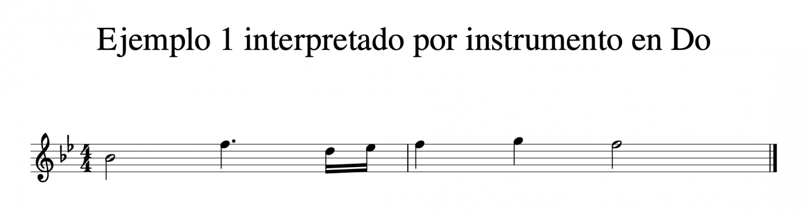

Instrumentos transpositores: Qué son y cómo transportar partituras
Las diferentes tonalidades de los instrumentos transpositores
Si tocas en un grupo o ensemble, sobretodo si forman parte de él instrumentos de viento, probablemente ya sepas de lo que estamos hablando, o, al menos, te sonará el tema. Si tocas uno de los instrumentos transpositores, es muy probable que en algún momento hayas tenido algún problema para tocar una partitura que no era para tu instrumento, ya que no sonaba «bien» al tocar con más músicos. Vamos a analizar por qué NO todos los instrumentos al tocar el mismo nombre de nota (por ejemplo la nota Do de un piano y la nota Do de un saxofón alto) emiten el mismo sonido.
¿Qué son los instrumentos transpositores?
Son instrumentos que, por sus características de construcción (tamaño mayormente), no coinciden el nombre que se les da a sus notas con el sonido que están emitiendo. Aquí hay que tener en cuenta que, en la mayoría de los casos, empezamos aprendiendo la escala de Do Mayor (quizás porque es la única tonalidad mayor que no tiene alteraciones, todas sus notas son naturales). Por lo tanto muchas veces a la «primera posición» de un instrumento se le llama Do, aunque su sonido no coincida con la nota Do, como decía anteriormente, debido a su tamaño (cuanto más grande, más grave). Un ejemplo puede ser la trompeta. En su primera posición contiene la serie armónica de lo que llaman Do, pero sin embargo el sonido es el de la serie armónica de Sib. Por lo tanto diríamos que la tonalidad de la trompeta es Sib. A la nota que emite el saxofón alto al tener no todas sus llaves cerradas, sino sólo las principales, la nombran Do, sin embargo el sonido que emite es un Mib, por eso se dice que la tonalidad del saxofón alto es esa, Mib. Existen otro tipo de instrumentos transpositores. Son aquellos que, aunque coincide la nota que tocan con el sonido que emiten, es a la hora de escribir en una partitura donde hacemos el proceso de transposición. En este caso para facilitar la lectura del pentagrama. Un ejemplo podría ser el contrabajo, instrumento que al tocar notas tan graves, para evitar tener que usar constantemente muchas líneas divisorias, su papel está escrito una octava por encima de lo que realmente suena. Existe una técnica para poder leer partituras que están en otra tonalidad o que corresponden a otro instrumento. Veamos cómo hacerlo.
Algunos instrumentos transpositores y su respectiva transposición
- Clarinete en Bb --- 2M ↑
- Saxo Alto en Eb --- 6M ↑
- Saxo Tenor en Bb --- 2M ↑ (8va)
- Saxo Barítono en Eb --- 6M ↑ (8va)
- Saxo Alto en Eb --- 6M ↑
- Trompeta en Bb --- 2M ↑
- Piccolo --- 8J ↓
- Corno Francés en F --- 5J ↑
- Guitarra --- 8J ↑
- Bajo/Contrabajo --- 8J
Cómo transportar partituras
Es un proceso bastante sencillo. Unicamente tendremos que tener en cuenta la tonalidad de nuestro instrumento y la de la partitura que queremos interpretar, calcular la distancia que existe entre las dos tonalidades y aplicarla a la hora de leer la partitura (si quieres saber más acerca de los intervalos te recomiendo que eches un vistazo a Intervalo musical. Herramientas para componer). Con un ejemplo será más fácil de entender. Si, por ejemplo con un piano (cuya tonalidad es Do), queremos interpretar una partitura de saxo alto (Mib), en primer lugar calculamos la distancia que hay de Do a Mib, que es una tercera menor ascendente. Ahora lo que debemos hacer es aplicar ese intervalo a la hora de leer la partitura y de calcular la nueva tonalidad y armadura. Por lo tanto tendremos que subir una tercera menor a la hora de ir leyendo la partitura para que con el piano (o cualquier otro instrumento en Do) suene bien una partitura de saxo alto. Lo más fácil es calcular la nueva tonalidad y, sabiendo su armadura directamente subir una tercera (2 notas) a la partitura original añadiendo las alteraciones de la tonalidad a la que hemos ido. Comprobemos visualmente el resultado.
Aquí tenemos un fragmento de una melodía que nos indica que es para saxo alto en Mib. Si lo fuéramos a interpretar con un saxofón alto, tendríamos que leer la partitura sin realizar ningún cambio. Si, como mencionábamos antes, quisiéramos tocar esta melodía con un instrumento en Do, deberíamos hacer los cálculos que hemos descrito en el párrafo anterior y el resultado a la hora de interpretar esta partitura con un instrumento en Do sería el siguiente.
Esta sería la interpretación que deberíamos hacer desde un instrumento en Do de la partitura original para saxo alto. Como puedes comprobar, las notas han subido una tercera (dos notas) y, con el cambio de armadura de un sostenido a 2 bemoles, hacemos que la distancia sea siempre de una tercera menor. Conociendo la armadura de la nueva tonalidad (en este caso 2 bemoles, pues de Sol Mayor hemos subido una tercera menor hasta Sib Mayor), no haría falta calcular constantemente la tercera menor. Sería suficiente con pensar en 2 notas superiores (tercera ascendente) y aplicar las alteraciones de la tonalidad resultante.
Fuente